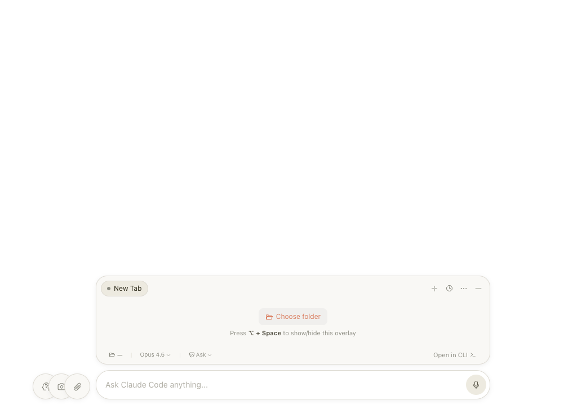
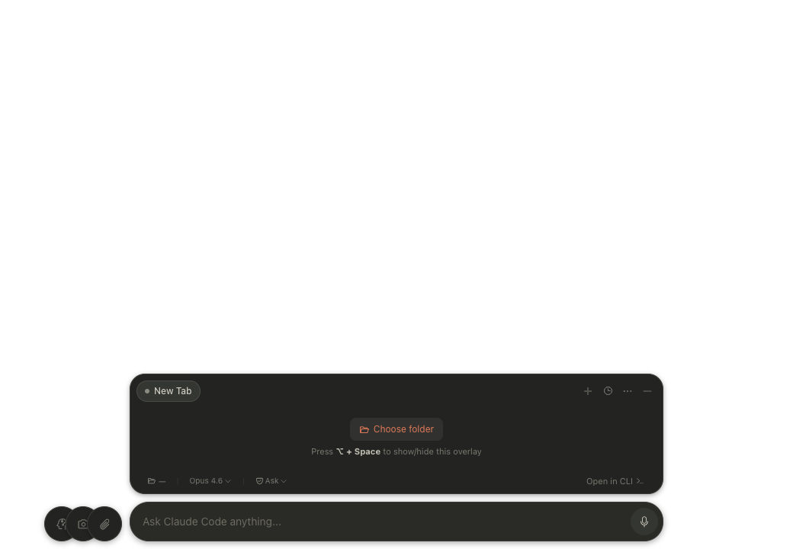

A calm, floating overlay that stays out of your way until you need it. No API key. No friction.


Option+Space summons Clui above every window, every app, wherever you are. Same shortcut sends it away. It leaves no trace — no dock icon, no menu clutter.
Clui intercepts every write, delete, and shell command before it touches your system. Review it, approve it, or deny it in one click. Set permanent rules per project so trusted operations never interrupt you again.
Browse the community marketplace or author your own. Git flows, code review prompts, deploy scripts, test runners — all accessible as slash commands the moment they're installed.
Activate voice mode and dictate naturally. Clui transcribes in real time and sends your message the moment you stop speaking. Ideal for long prompts, fast ideas, and hands-free workflows.
Every detail has earned its place. Nothing shipped until it felt right.
Install via Homebrew — the same way you install everything else on your Mac.
No subscription. No API key. No drama.
Just a quieter way to work with Claude.